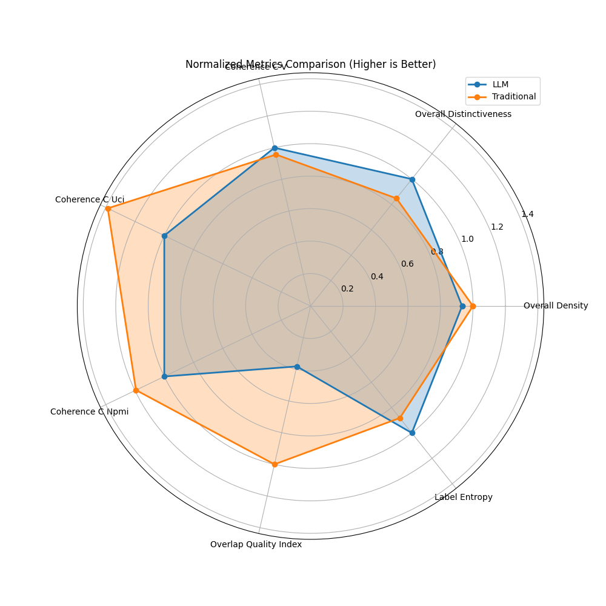

Model Comparison Report: LLM vs. Traditional Approach
Executive Summary
Based on 7 comparative metrics:
- LLM approach wins on 5 metrics
- Traditional approach wins on 2 metrics
- Overall recommendation: LLM
Key Metrics Comparison
| Metric | LLM | Traditional | Difference | Better Model |
|---|---|---|---|---|
| Overall Density | 0.0840 | 0.0900 | -0.0060 | Traditional |
| Overall Distinctiveness | 0.1237 | 0.1049 | 0.0188 | LLM |
| Coherence C V | 0.2993 | 0.2865 | 0.0128 | LLM |
| Coherence C Uci | -0.4897 | -0.6791 | 0.1894 | LLM |
| Coherence C Npmi | -0.0497 | -0.0593 | 0.0096 | LLM |
| Overlap Quality Index | 0.0289 | 0.0758 | -0.0469 | Traditional |
| Label Entropy | 2.5411 | 2.2407 | 0.3004 | LLM |
| Avg Labels Per Doc | 3.0000 | 3.0000 | 0.0000 | More labels is not necessarily better, depends on use case |
Label and Document Counts
| Metric | LLM | Traditional | Difference |
|---|---|---|---|
| Label Count | 6 | 5 | 1 |
| Doc Count | 18 | 18 | 0 |
Label Quality Analysis
| Metric | LLM | Traditional | Better Model |
|---|---|---|---|
| Avg Label Density | 0.0840 | 0.0900 | Traditional |
| Avg Label Distinctiveness | 0.1237 | 0.1049 | LLM |
| Unique Top Words Count | 6.0000 | 6.0000 | Traditional |
Visualizations
Comparison of Key Metrics

Normalized Metrics Comparison

Distribution of Better Performance
Detailed Model Information
LLM Model Labels
- State-Sponsored Espionage (20 documents) - Top words: the, to, and, of, in
- Cyber Threat Intelligence (20 documents) - Top words: the, to, of, and, a
- Advanced Persistent Threats (APT) (20 documents) - Top words: the, to, and, of, in
- Geopolitical Implications (20 documents) - Top words: the, to, and, of, in
- Malware and Exploits (20 documents) - Top words: the, to, and, of, a
- Cybersecurity Techniques and Tools (20 documents) - Top words: the, to, and, of, a
Traditional Model Labels
- malware, http, intellexa (20 documents) - Top words: the, to, and, of, a
- typhoon, microsoft, flax (20 documents) - Top words: the, to, and, of, in
- emotet, sysjoker, malware (20 documents) - Top words: the, to, of, and, a
- threat, file, actors (20 documents) - Top words: the, to, and, of, a
- gootloader, file, registry (20 documents) - Top words: the, to, and, of, a
Conclusion
The LLM-based approach demonstrates superior performance overall, particularly in metrics related to semantic coherence and quality of clustering. This suggests that for this specific document set, the language model's understanding of context and semantics provides more meaningful topic groupings.